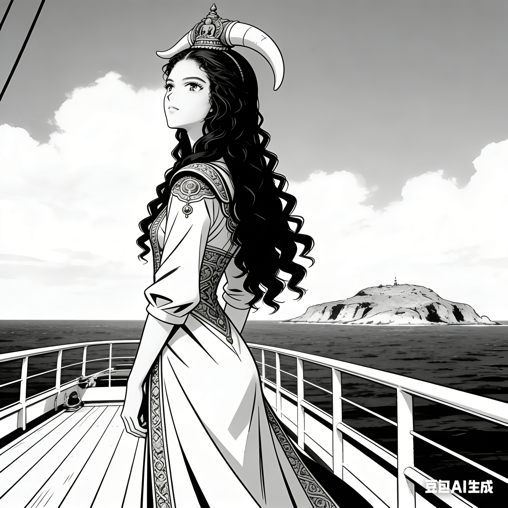
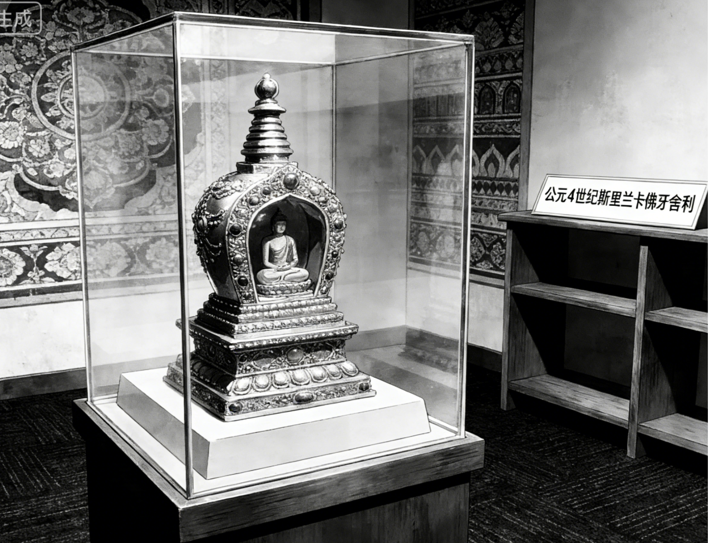

1: 在公元4世纪的斯里兰卡正在发生内乱。

2: 公主登上一艘波斯商船求援，她将国宝佛牙舍利藏在头发里：“哎，希望他们不要发现。”公主心想。

3: 公主在夹板上眺望远方的家乡，内心十分不安：“战乱快点结束吧！”

4: 一群海盗闯上这艘商船：“你们把所有珠宝都交出来！”

5:公主和船长把佛牙舍利偷偷藏在装有胡椒粉的罐子里：“我们把它藏在罐子里吧”船长悄悄的说。

6:海盗拿着金银珠宝哈哈大笑，踢开脚边的罐子：“这是什么廉价的香料！”所以佛牙舍利保住了。

7:为了纪念多年后佛牙舍利被后代放在博物馆里观赏。

8:为了纪念波斯船长冒着风险保护国宝佛牙舍利，工人在海边修建寺庙，寺院墙上写着波斯船长的名字“愿风佑善念”。